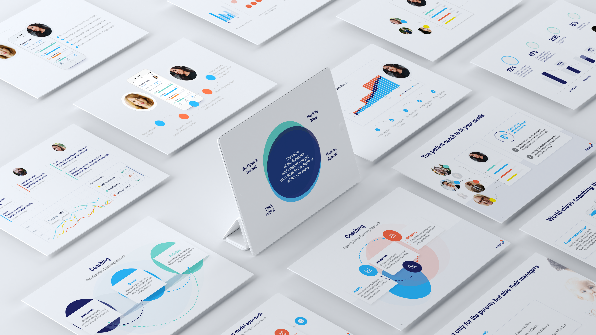
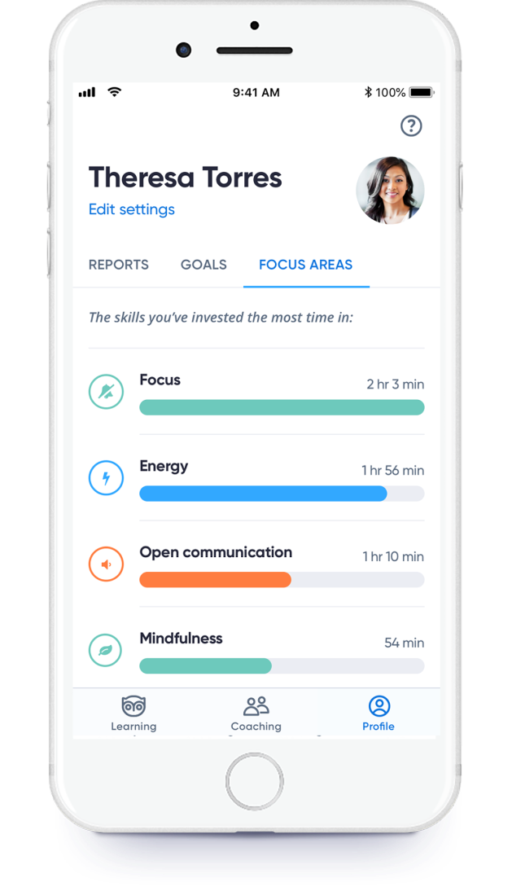
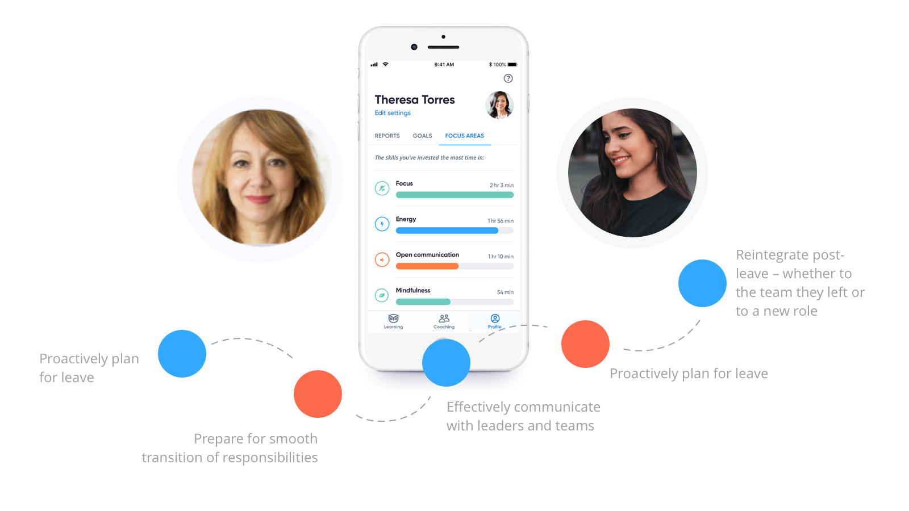
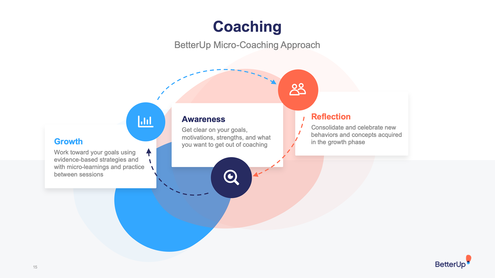

Executive presentation design for BetterUp — translating complex platform capabilities and research into compelling, visually unified narratives for investor relations, sales enablement, and leadership communications.
BetterUp operates at the intersection of coaching, performance science, and enterprise HR technology. Communicating that clearly — to investors, enterprise buyers, and executives — required presentation design that was both rigorous and visually compelling. The work focused on building a presentation system that could flex across different audiences while maintaining a consistent visual standard.




Good presentation design disappears — the audience shouldn't notice the layout, they should notice the idea. The approach for BetterUp focused on structured hierarchy, generous whitespace, and a visual language that elevated BetterUp's data-heavy content without overwhelming it. Templates were built for reuse, so internal teams could maintain quality without starting from scratch.